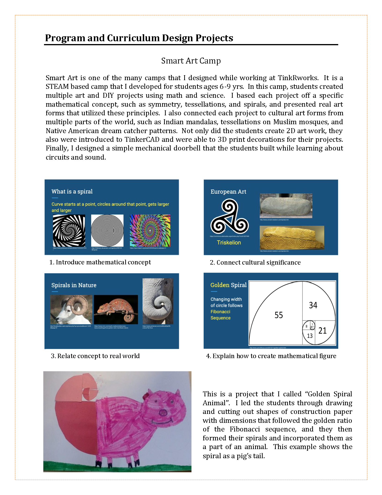
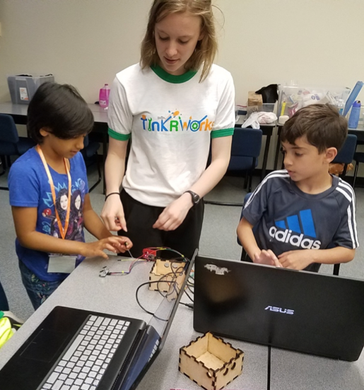
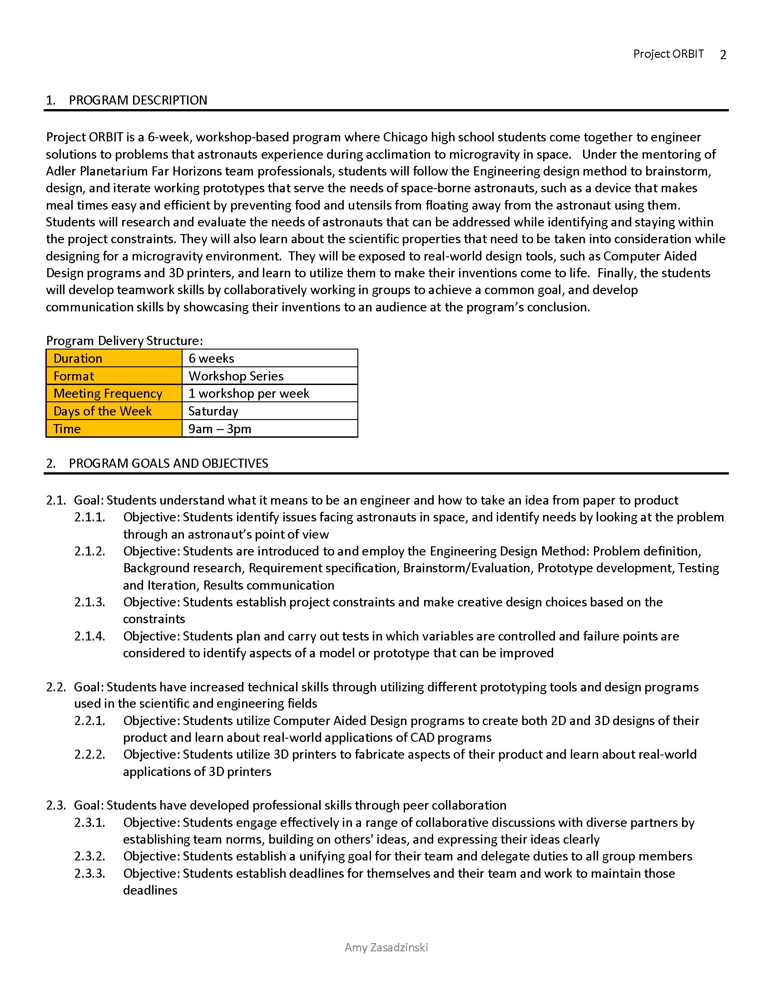
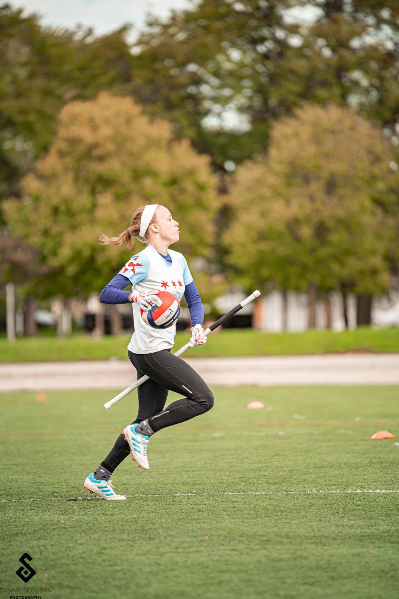

TinkRworks Program and Curriculum
This is an overview of some of the curriculum I developed for TinkRworks STEAM summer camps and after school classes. These are examples of early projects that are no longer in use for the protection of current TinkRworks IP. More examples of my TinkRworks programing can be found on my resume and can be discussed upon request!

This is a photo of me facilitating a lesson on building a project consisting of an Arduino and sensors in a wooden container.

Adler Planetarium Program Implementation Plan ORBIT
This is an implementation plan that I developed for a theoretical program at the Adler Planetarium in Chicago. I interviewed for the position of Teen Programs Manager, and I created a program that introduced students to the Engineering Design Method through a team-driven, project-based, week-long experience.

USQ Backyard Quidditch Tutorial
This is a document that I created for United States Quidditch that teaches families how to set up casual quidditch games in their own backyards. I love facilitating youth quidditch events, and I even incorporated quidditch into a summer camp at TinkRworks! I also created the Youth Quidditch Overview referenced in this document, which can be found on the USQ website.

This is me playing quidditch for my team, Chicago United Quidditch Club, in case you thought i wasn't serious.